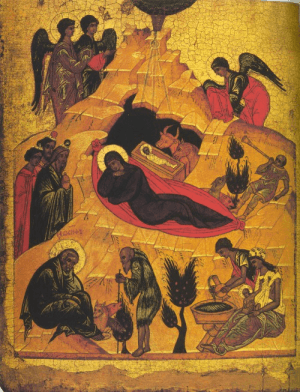

< < < Back
Waes Hael, Drinc Hael, And Merry Christmas To All – Return Of Kings
Christ is born, and a Merry Christmas to all!
I greet the men of ROK with an article composed solely to share a bit of Christmas cheer. I have little of my own to say, for this day speaks enough for itself, in the beauties that it hands down to us from ages past. I will present an (expurgated) homily of St. John Chrysostom, some of my favourite, largely forgotten Christmas tunes, and a link to the “Carols at King’s” from the year 2000; it has been my tradition for the past few years, at the end of Christmastide days, to enjoy a bit of brandy or wassail (with brandy, obviously), watching Carols at King’s by the light of the Christmas Tree. God grant you all joy on the feast!
First, an expurgated version of a Christmas sermon by St. John Chrysostom:
I behold a new and unthinkable Mystery! My ears resound to the shepherds’ song, piping no soft melody, but chanting full forth an heavenly hymn. The Angels sing! The Archangels blend their voice in harmony; the Cherubim hymn their joyful praise. The Seraphim exalt His glory. All join to praise this holy feast, beholding the Godhead here on earth, and man in heaven. He Who is above, now for our redemption dwells here below; and he that was lowly is by divine mercy raised.
Bethlehem this day resembles heaven; hearing from the stars the singing of angelic voices; and in place of the sun, enfolds within itself on every side, the Sun of justice.
What shall I say to you; what shall I tell you? I behold a Mother who has brought forth; I see a Child come to this light by birth. The manner of His conception I cannot comprehend. Nature here rested, while the Will of God labored. O ineffable grace! The Only Begotten, Who is before all ages, Who cannot be touched or be perceived, Who is simple, without body, has now put on my body, that is visible and liable to corruption.
Christ, finding the holy body and soul of the Virgin, builds for Himself a living temple, and as He had willed, formed there a man from the Virgin; and, putting Him on, this day came forth; unashamed of the lowliness of our nature. For it was to Him no lowering to put on what He Himself had made. Let that handiwork be forever glorified, which became the cloak of its own Creator. For as in the first creation of flesh, man could not be made before the clay had come into His hand, so neither could this corruptible body be glorified, until it had first become the garment of its Maker.
What shall I say! And how shall I describe this Birth to you? For this wonder fills me with astonishment. The Ancient of days has become an infant. He Who sits upon the sublime and heavenly Throne, now lies in a manger. And He Who cannot be touched, Who is simple, without complexity, and incorporeal, now lies subject to the hands of men. He Who has broken the bonds of sinners, is now bound by an infants bands. But He has decreed that ignominy shall become honor, infamy be clothed with glory, and utter abasement be the measure of His Goodness.
Come, then, let us observe the Feast! Truly wondrous is the whole chronicle of the Nativity. For this day the ancient slavery is ended, the devil confounded, the demons take to flight, the power of death is broken, paradise is unlocked, the curse is taken away, sin is removed from us, error driven out, truth is brought back, the speech of kindliness is diffused, and spreads out in every direction. A heavenly way of life has been planted on the earth, angels communicate with men without fear, and men now hold colloquy with angels.
To Him, then, Who out of confusion has wrought a clear path, to Christ, to the Father, and to the Holy Ghost, we offer all praise, now and forevermore. Amen.

Very much worth a listen, in connection with this, is the Byzantine Office composed by St. John Damascene, which is based in part on this homily of St. John. Readers may remember I quoted from it in my post at the beginning of Advent; “I behold a new and unthinkable Mystery” begins at the one minute mark, but all of it is impressive (moreso if you understand Greek, I’ll admit).
And, for good measure, one of the best renditions of the Latin hymn I also quoted at that time (“O Magnum Mysterium”), so similar in spirit.
And now, for some of my favourite, lesser-known Christmas music. There are many very great Christmas carols, which we all know – God Rest Ye, Merry Gentlemen; O Little Town of Bethlehem; Silent Night – so, I don’t mean to detract from these. But one of my favourite things about Christmas, is how steeped it is in the glory and traditions of our ancestors, reaching back in time to music and customs that feel like “home” when we find them, even if we hadn’t known them before. So, these are some miscellaneous bits from Christmases past, which I enjoy most.
Circa Canit Michael
From a long, long time ago this Rundellus was part of a Medieval Christmas play (sometimes also appearing at Eastertide), and I can’t help but smile at its ebullience. The song tells how Michael proclaims the news of Christ’s birth, the angels sing ‘Gloria’ on high, the Fatherland of manly excellence is returned to us, so we must now strive to leave vice and effeminacy behind; now the Virgin’s chastity has blossomed with the flowers of integrity and impassibility.
In Dulci Iubilo
You’ll find the original text and plenty of translations on the web. Here’s one of my favourite recordings of it – some may say it is baroque, eccentric, opulent, and excessive. Yes, it is, and to God be the glory. I like to turn it up on full blast while surveying all the Christmas decorations with satisfied, good cheer (and a bit more brandy). Sweet jubilation, indeed! Our cause is just! And indeed, the lyrics were probably written by Blessed Henry Suso, an holy Dominican contemplative, so honi soit qui mal y pense.
Personent Hodie
You’ll find the original text and many translations for this one, too. The prince of hell is ruined, and we enjoy the spoils! Raise your glasses, men! There are lots of glorious versions of this around, but I like this simple version sung by the distinctive voice of Maddy Prior (best known as lead singer of Steeleye Span) for its clarity, Medieval style and good-heartedness.
Joseph est Bien Marié
I like this song for its charm and understatement, which rather highlights the grandeur of its themes, understating them with such sentiments as: “Joseph sure did marry into a good family,” and “it’s a rather novel thing, to be both a mother and a maiden.”
Christmas is a time when fathers often get forgotten, since the focus is primarily on the children and on the busy activity of the womenfolk. Also, men usually don’t spend the month ahead of time dropping hints about all the stuff they want for Christmas… so, while he buys what everyone else wants, he often gets stuck with socks or a tie. A superficial judgment may think the man is getting the raw end of the deal, but, truly, they have the better part: the focus is entirely off them, and they experience the greater joy of selflessness and providing for their loved ones; men more naturally penetrate into the meaning of the feast, and raise their minds above the things that women and children are rather more taken with. So, I like that this carol focuses on St. Joseph, who is also often forgotten amidst the songs of Virgin and Child. There are cleaner and crisper versions of this song online, but I like this one for the all-male choir (Franciscans, in fact) and its heart.
Go away
Last but not least, how better could I bid you all farewell on this day, than by sharing Leonin’s meditative setting of the deacon’s dismissal from Christmas Day Mass? “Go ye, (the oblation) is offered,” to which the people respond, “thanks be to God” (or, pithily translated: “Go away, Mass is over.” “Thank God!” – though, if they still sang Mass like this, we wouldn’t mind hanging around). This setting takes the most solemn melody for the dismissal, adds some simple polyphony, and turns five words into a four-minute musical meditation (chiefly on the response, “thanks be to God”).
Now, as promised, I bid you farewell and offer you the Carols from Kings, from the year 2000; they have a similar policy to ROK: no women allowed! (Okay, sometimes a woman does a reading; but at least none of them ruin the singing. Speaking of, you may want to skip the readings, since they reflect modern Anglicans’ thoughts, and are sometimes more “Churchian” than Christian.)
Now: there are 12 days of feasting, brothers; pour the brandy, and may you have good cheer for them all!
Waes hael for Lord and Dame, o merry be their dole!
Drinc hael in Jesu’s name, and fill the tawny bowl!
Merry Christmas to all.
Read More: A ROK Christmas Benediction From Brother Cui Pertinebit